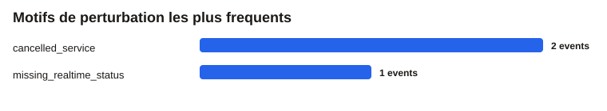

Lecture simple des resultats du projet : etat global du reseau, lignes et arrets sensibles, motifs de perturbation et exemples concrets.
Bloc a montrer en premier dans une presentation ou dans le rendu ecrit.
Lecture graphique rapide des lignes les plus touchees.
Les arrets avec le plus de perturbations dans l'echantillon.
Les causes les plus frequentes observees dans les donnees.

Tableau simple a reprendre dans le rapport.
| Ligne | Observations | Retard moyen | Perturbation |
|---|---|---|---|
| C01742 (A) | 128 | -0,03 min | 0,00 % |
Les arrets a surveiller en priorite.
| Arret | Observations | Retard moyen | Perturbation |
|---|---|---|---|
| La Défense | 286 | 0,00 min | 0,70 % |
Version tabulaire des causes principales.
| Motif | Evenements | Part |
|---|---|---|
| Service annule | 2 | 66,67 % |
| Statut temps reel manquant | 1 | 33,33 % |
Quelques observations reelles pour montrer comment les perturbations apparaissent dans les donnees.
| Ligne | Arret | Depart prevu | Retard | Motif |
|---|---|---|---|---|
| C01729 | La Défense | 2026-03-25T15:31:10.000Z | 1,33 min | Service annule |
| C00754 | La Défense - Terminal Jules Verne | 2026-03-25T16:20:00.000Z | 0,00 min | Statut temps reel manquant |
| C01729 | La Défense | 2026-03-25T15:59:20.000Z | 0,00 min | Service annule |